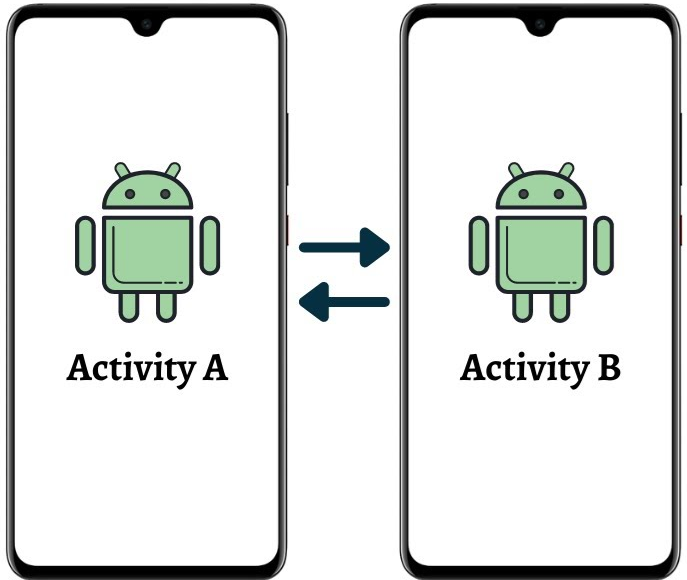
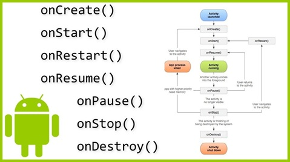
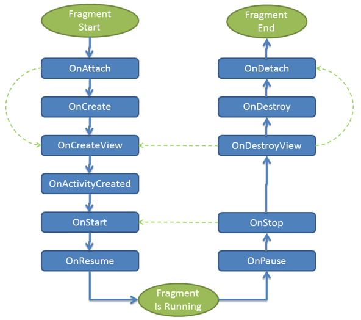
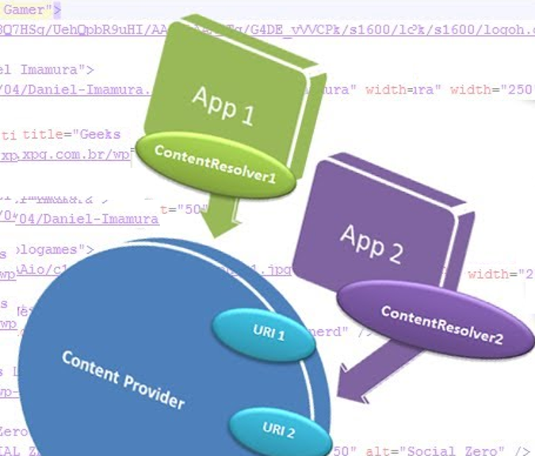
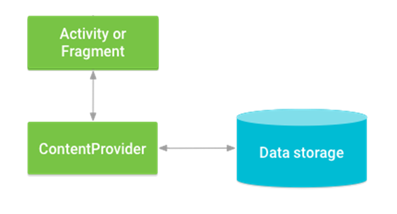

Arquitectura base y componentes del sistema Android
Introducción
Las aplicaciones Android están formadas por un conjunto de componentes que trabajan de manera coordinada bajo la gestión del sistema operativo. Cada componente cumple una función específica y tiene un ciclo de vida propio, gestionado por el sistema según las necesidades de recursos y contexto.
Comprender esta arquitectura es esencial para diseñar aplicaciones eficientes, seguras y escalables. En este tema exploraremos cómo Android organiza las aplicaciones, qué papel desempeña cada componente y cómo se comunican entre ellos.
Arquitectura de una aplicación Android
Una aplicación Android se compone de varias capas interdependientes:
- Aplicación → Las Activities, Fragments, Services, etc. que construyen la funcionalidad visible y la lógica de la app.
- Framework de Android → Proporciona las APIs principales que permiten interactuar con el sistema operativo.
- Bibliotecas del sistema → Conjunto de librerías C/C++ que implementan componentes fundamentales (gráficos, base de datos, multimedia).
- Kernel de Linux → Gestiona memoria, procesos, seguridad y comunicación entre hardware y software.
Android gestiona los procesos de las aplicaciones de forma dinámica. Cada app se ejecuta en su propio proceso, con su propio espacio de memoria, y el sistema puede pausar o destruir componentes para liberar recursos sin afectar a otras apps.
Componentes fundamentales de una aplicación Android
Los seis componentes principales son las piezas clave que el sistema utiliza para ejecutar, mostrar información, comunicarse y compartir datos entre aplicaciones.
Activity
Definición: Una Activity representa una pantalla con la que el usuario puede interactuar directamente. Es el punto de entrada más habitual de una aplicación.

Funciones principales: - Gestionar la interfaz de usuario (UI) y las interacciones del usuario. - Coordinar el ciclo de vida de la pantalla y los recursos asociados.
Métodos clave del ciclo de vida:
- onCreate() → Inicializa la actividad y configura la interfaz.
- onStart() → Hace visible la Activity.
- onResume() → La Activity pasa a primer plano y es interactiva.
- onPause() → Se pausa cuando otra Activity toma el foco.
- onStop() → Deja de ser visible.
- onDestroy() → Se libera la memoria asociada.
Ejemplo: Pantalla de inicio de sesión que contiene campos de usuario y contraseña. Cuando el usuario rota el dispositivo, el estado debe guardarse para restaurarse al volver a onResume().
Buenas prácticas:
- Evitar operaciones pesadas en onCreate() o onResume().
- Utilizar ViewModel y LiveData para preservar el estado.
- Dividir la lógica de UI en Fragments para modularidad.

Activity ejemplo
Imagina que la "actividad" es la experiencia completa de ir a ver una película al cine. Esta actividad tiene diferentes estados que corresponden al ciclo de vida de una actividad en Android:
➤ onCreate() (Actividad creada):
Este sería el momento en el que decides ir al cine y empiezas a preparar todo. Te pones los zapatos, coges las llaves del coche y sales de casa.
Es el inicio de la actividad: se están configurando las cosas necesarias para que la experiencia pueda llevarse a cabo.
➤ onStart() (Actividad visible):
Has llegado al cine y ya compraste las entradas. Ahora estás en el pasillo, visible para otros, pero aún no has comenzado a ver la película.
La actividad está "visible" en el sentido de que ya estás en el cine, pero la experiencia principal (ver la película) todavía no ha comenzado.
➤ onResume() (Actividad en primer plano):
Entras a la sala, te sientas, y la película comienza a reproducirse. Ahora estás completamente inmerso en la actividad de ver la película.
Este es el momento en el que la actividad está en "primer plano" y es la experiencia principal en la que te estás enfocando.
➤ onPause() (Actividad parcialmente oculta):
Imagina que durante la película tienes que salir de la sala por un momento para contestar una llamada telefónica.
La película sigue en curso, pero tú no estás prestando atención activa. La actividad está en pausa, ya que has salido temporalmente del cine.
➤ onStop() (Actividad ya no visible):
Terminas tu llamada, pero decides no volver a la sala de inmediato, tal vez te quedas en el pasillo hablando con alguien.
La película sigue proyectándose, pero ya no estás en la sala. La actividad no es visible para ti en este momento.
➤ onRestart() (Actividad vuelve a ser visible):
Decides volver a la sala de cine y continuar viendo la película. La actividad se reinicia y se convierte en el centro de tu atención nuevamente.
Esto es similar a cómo una actividad en Android puede volver al primer plano después de haber sido detenida.
➤ onDestroy() (Actividad destruida):
La película termina, te levantas y sales del cine. La experiencia de ver la película ha llegado a su fin.
En este punto, la actividad se destruye, y cualquier cosa relacionada con la experiencia de la película se da por concluida.
Fragment
Definición: Un Fragment es un componente reutilizable que forma parte de la interfaz de una Activity. Permite dividir una pantalla en secciones modulares.

Funciones principales:
- Facilitar interfaces dinámicas y adaptables (por ejemplo, para tablets).
- Compartir la lógica entre diferentes pantallas.
Ciclo de vida simplificado:
- onAttach() → El fragment se asocia a la Activity.
- onCreateView() → Se infla el diseño (layout) del fragment.
- onViewCreated() → Se inicializa la lógica de la interfaz.
- onPause() / onStop() / onDestroyView() → Se limpian los recursos visuales.
Ejemplo: Una app de noticias donde un fragment muestra la lista de artículos y otro el detalle del artículo seleccionado.
Buenas prácticas:
- Evitar dependencias directas entre Fragments: usar ViewModel compartido o el componente de navegación (NavController).
- No mantener referencias a vistas fuera de su ciclo de vida (onDestroyView()).

Fragment ejemplo
Imagina que cada fragmento es como una sección de una feria. Cada fase del ciclo de vida del fragmento corresponde a lo que ocurre con esa sección durante toda la feria.
➤ onAttach() (El fragmento se adjunta a la actividad):
Es el momento en que los organizadores asignan el espacio físico para una sección de la feria y comienzan a instalarla (por ejemplo, la entrada principal con señalizaciones).
En Android, significa que el fragmento se ha asociado a la actividad que lo contendrá.
➤ onCreate() (Creación del fragmento):
La sección se empieza a preparar: decoraciones, folletos y personal, aunque la feria todavía no está abierta al público.
En un fragmento, se inicializan recursos necesarios, pero aún no se ha creado la interfaz visual.
➤ onCreateView() (Creación de la vista):
Se montan las mesas, los productos y todo lo visible para los visitantes.
En Android, aquí se crea la interfaz de usuario del fragmento.
➤ onActivityCreated() (La actividad ha completado su creación):
La feria abre sus puertas al público. Los visitantes ya pueden recorrer las secciones.
En Android, el fragmento y su actividad están completamente inicializados y listos para funcionar.
➤ onStart() (El fragmento es visible):
La sección está abierta y visible para los visitantes, aunque aún no está en plena interacción.
En Android, la vista del fragmento ya es visible en pantalla.
➤ onResume() (El fragmento está activo y en primer plano):
Los visitantes interactúan, preguntan, ven demostraciones y participan activamente.
En Android, el fragmento está completamente activo y el usuario puede interactuar con él.
➤ onPause() (El fragmento está parcialmente oculto):
Algunos visitantes se van a otras secciones, aunque todavía pasa gente ocasionalmente.
En Android, el fragmento sigue visible parcialmente, pero ha perdido el foco.
➤ onStop() (El fragmento ya no es visible):
La sección se cierra temporalmente, quizá para mantenimiento. Ya no hay visitantes.
En Android, el fragmento ya no está visible, aunque sigue existiendo en memoria.
➤ onDestroyView() (Vista del fragmento destruida):
Se desmontan los elementos visibles de la sección (mesas, carteles), pero la estructura sigue existiendo.
En Android, se elimina la vista del fragmento, pero el objeto fragment aún existe.
➤ onDestroy() (El fragmento se destruye por completo):
La sección de la feria termina, se retiran todos los elementos y recursos.
En Android, el fragmento libera todos sus recursos y se destruye.
➤ onDetach() (El fragmento se desacopla de la actividad):
La sección se elimina por completo del evento, ya no forma parte de la feria.
En Android, el fragmento se desacopla de la actividad, dejando de tener referencia a ella.
Service
Definición: Un Service es un componente que ejecuta tareas en segundo plano sin interfaz de usuario.
Tipos de servicios:
- Started Service: Inicia una tarea que se ejecuta indefinidamente (por ejemplo, descarga de archivos).
- Bound Service: Permite que otras aplicaciones o componentes se vinculen a él para interactuar (por ejemplo, un reproductor de música).
- Foreground Service: Muestra una notificación persistente para indicar al usuario que está activo.
Métodos clave:
- onCreate() → Inicializa el servicio.
- onStartCommand() → Inicia la tarea principal.
- onBind() → Permite vincular otros componentes.
- onDestroy() → Libera recursos.
Ejemplo: Servicio que gestiona la reproducción de música o la sincronización de datos en segundo plano.
Buenas prácticas:
- Evitar servicios permanentes sin notificación.
- Utilizar WorkManager o JobScheduler para tareas periódicas o dependientes de red.

Service ejemplo
En este caso, el "servicio" sería el proceso de recoger la comida del restaurante y entregarla al cliente. Cada etapa del ciclo de vida del servicio en Android tiene un paralelo con este proceso de entrega.
➤ onCreate() (Creación del servicio):
Cuando se inicia un pedido, la empresa de reparto recibe una nueva solicitud. Se asigna un repartidor y se preparan los recursos necesarios (vehículo, instrucciones, dirección del cliente, etc.).
Es equivalente a cuando un Service en Android se inicializa: el sistema lo prepara para empezar, pero aún no realiza la tarea principal.
➤ onStartCommand() (Inicio del servicio):
El repartidor se dirige al restaurante para recoger la comida. El proceso de entrega comienza oficialmente.
En Android, este método se ejecuta cada vez que el servicio recibe una solicitud para comenzar o continuar su trabajo.
➤ onBind() (Servicio enlazado):
Si el cliente decide seguir en tiempo real dónde está el repartidor, se establece una conexión entre el cliente y el servicio para ofrecer actualizaciones del pedido.
En Android, onBind() se usa cuando una actividad (o componente) necesita interactuar directamente con el servicio.
➤ onUnbind() (Servicio desenlazado):
Si el cliente deja de seguir el pedido en tiempo real, la conexión se corta. El repartidor sigue con su trabajo, pero ya no envía actualizaciones.
Esto refleja cuándo un servicio en Android deja de estar enlazado a la actividad que lo utilizaba.
➤ onDestroy() (Servicio destruido):
Una vez entregada la comida y regresado el repartidor, el servicio finaliza. Los recursos utilizados (vehículo, personal, sistema de seguimiento) quedan libres para otro pedido.
En Android, este método se ejecuta cuando el servicio ya no es necesario y se detiene completamente, liberando todos los recursos.
Broadcast Receiver
Definición: Los Broadcast Receivers reaccionan a eventos globales del sistema o de otras aplicaciones. No tienen interfaz de usuario y su ciclo de vida es muy breve.

Ejemplos de eventos:
- Dispositivo conectado al cargador.
- Cambio de conectividad de red.
- Recepción de un SMS o notificación push.
Método principal:
- onReceive(Context, Intent) → Se ejecuta cuando se detecta el evento.
Ejemplo: Un receptor que detecta cuando el teléfono entra en modo avión y muestra un mensaje al usuario.
Buenas prácticas:
- Registrar receptores dinámicos solo cuando sean necesarios.
- Evitar operaciones pesadas dentro de onReceive().
- Usar WorkManager para procesamientos prolongados.

Broadcast Receiver ejemplo
Imaginemos que en una ciudad existe un sistema de alarmas que no está activo de forma continua, sino que solo se pone en marcha cuando recibe una señal específica: un incendio, emergencia médica o desastre natural. Esta lógica es similar al funcionamiento de un BroadcastReceiver en Android.
➤ onReceive() (El sistema de alarmas se activa al recibir una señal):
Supongamos que se detecta un incendio. Automáticamente se envía una señal al sistema de alarmas de la ciudad, y las sirenas comienzan a sonar para alertar a los ciudadanos.
En Android, onReceive() es el método que se ejecuta cuando el broadcast que el receptor espera (como batería baja, alerta meteorológica, cambio de red, etc.) es recibido.
➤ Ejecución de la alarma (Acción tras recibir la señal):
Activada la alarma, se informa a los servicios de emergencia y se alerta a la población. Esta acción es rápida y concreta.
Del mismo modo, tras onReceive(), el BroadcastReceiver realiza su acción: mostrar una notificación, iniciar un servicio o ejecutar una tarea breve en segundo plano.
➤ Finalización de la alarma (Sistema vuelve al estado inactivo):
Cuando la emergencia es atendida, la alarma se apaga y el sistema queda esperando hasta la próxima señal.
En Android, una vez finaliza onReceive(), el BroadcastReceiver se destruye. Solo existe mientras realiza la acción asociada al evento recibido.
Content Provider
Definición: Un Content Provider permite compartir datos entre diferentes aplicaciones mediante URIs estructuradas.

Método principal:
- onCreate() → Se ejecuta al inicializar el proveedor y se configuran los recursos (por ejemplo, una base de datos SQLite).
Métodos CRUD:
- query() → Recupera datos.
- insert() → Agrega nuevos datos.
- update() → Modifica datos existentes.
- delete() → Elimina datos.
- getType() → Devuelve el tipo MIME asociado a una URI.
Ejemplo: Un ContentProvider que ofrece acceso a los contactos o fotos del dispositivo.
Buenas prácticas:
- Usar contratos (Contract classes) para definir URIs y columnas.
- Implementar seguridad en los permisos de acceso.

Content Provider ejemplo
Imaginemos que una aplicación es como una biblioteca pública, donde las personas pueden consultar información o pedir libros cuando lo necesiten. La biblioteca no entrega libros continuamente, sino que gestiona solicitudes de acceso, préstamo y devolución de forma organizada. Lo mismo hace un Content Provider en Android.
➤ Inicialización de la biblioteca (Creación del Content Provider):
La biblioteca abre sus puertas, los libros están organizados, el personal está disponible y la base de datos del catálogo está lista.
En Android, esto corresponde a cuando el Content Provider se inicializa por primera vez y queda preparado para responder a solicitudes de datos.
➤ Consulta de un libro (Acceso al Content Provider):
Un usuario entra y pide información sobre un libro. El bibliotecario consulta el catálogo y le proporciona los datos o el libro solicitado.
En un Content Provider, esto equivale a una consulta de datos: lectura, búsqueda o acceso a información almacenada en la base de datos.
➤ Préstamo del libro (Modificación de los datos):
Si el usuario decide llevarse el libro, el sistema registra que ahora está prestado y no disponible para otros hasta que se devuelva.
En Android, esto es como actualizar, insertar o eliminar datos en el Content Provider: se modifica el estado de la información almacenada.
➤ Cierre de la biblioteca (Liberación de recursos):
Al final del día, la biblioteca cierra, se guardan los libros, se actualizan los registros y se apagan los sistemas.
En un Content Provider, la liberación de recursos ocurre automáticamente cuando deja de ser necesario y Android gestiona la memoria de forma eficiente.
Application
Definición: Representa el estado global de la app y su punto de inicialización. Contiene la lógica que debe ejecutarse antes de que se creen otros componentes.
Método clave:
- onCreate() → Se ejecuta una vez al inicio del proceso de la aplicación.
Usos comunes:
- Inicializar librerías, gestores de dependencias o configuraciones globales.
- Mantener un estado compartido entre componentes.
Ejemplo: Una clase MyApp que extiende Application e inicializa Hilt para la inyección de dependencias.
Buenas prácticas:
- Evitar lógica compleja en onCreate().
- Delegar la inicialización a gestores o componentes específicos.

Application ejemplo
Imaginemos que la aplicación es como una fábrica que produce y distribuye productos. Su ciclo de vida incluye la preparación para abrir, las operaciones diarias, la gestión de recursos y el cierre.
➤ onCreate() (Creación de la empresa):
Es cuando la fábrica se prepara para abrir por primera vez. Los empleados llegan, las máquinas se encienden y todo se configura para empezar a trabajar.
En Android, onCreate() de la clase Application inicializa recursos globales, bibliotecas, configuraciones y servicios que estarán disponibles durante toda la vida de la app.
➤ Operaciones diarias (Empresa en funcionamiento):
La fábrica está abierta, las máquinas funcionan y los empleados trabajan. Es el ciclo normal de operación.
En Android, no hay un método específico en Application para esto, pero corresponde a cuando las actividades y servicios están activos y ejecutándose.
➤ onLowMemory() (Alerta de recursos limitados):
Surge un problema: falta energía o materiales. La fábrica debe reducir el consumo para seguir funcionando sin colapsar.
En Android, onLowMemory() se llama cuando el sistema tiene poca memoria y pide liberar recursos no esenciales.
➤ onTrimMemory(int level) (Ajuste de operaciones según la demanda):
Según el nivel de alerta, la fábrica reduce la producción, cierra áreas o envía empleados a casa para ahorrar recursos.
En Android, onTrimMemory() indica distintos niveles de memoria baja y permite optimizar según la situación (desde leve hasta crítica).
➤ onTerminate() (Cierre de la empresa):
Termina el día: se apagan máquinas, se hace mantenimiento y los empleados se van. La fábrica queda cerrada hasta el próximo día.
En Android, onTerminate() se ejecuta cuando la aplicación finaliza, aunque en la mayoría de dispositivos reales no se llama, ya que Android suele cerrar procesos sin notificar.
Comunicación entre componentes
La comunicación en Android se basa en el uso de Intents, que son mensajes asíncronos que permiten a los componentes solicitar acciones o intercambiar datos.
Tipos:
- Intents explícitos: Se dirigen a un componente concreto dentro de la app.
- Intents implícitos: Permiten que el sistema seleccione el componente adecuado (por ejemplo, abrir la cámara o el navegador).
Ejemplo:
val intent = Intent(Intent.ACTION_VIEW, Uri.parse("https://www.ulpgc.es"))
startActivity(intent)
Buenas prácticas:
- Usar IntentFilter para definir qué acciones puede manejar un componente.
- Validar los datos recibidos para evitar vulnerabilidades.
Ciclo de vida global de la aplicación
El sistema Android controla el ciclo de vida de cada componente para optimizar recursos. Comprender este flujo permite evitar fugas de memoria y mejorar la experiencia del usuario.
Flujo general:
1. El usuario inicia una Activity.
2. Esta puede crear Fragments y Services según necesidad.
3. El sistema puede pausar, detener o destruir componentes cuando cambian las condiciones (por ejemplo, al rotar la pantalla o minimizar la app).
4. Los BroadcastReceivers y ContentProviders se activan solo cuando son requeridos.
Buenas prácticas y patrones de diseño
- Aplicar el patrón MVVM (Model-View-ViewModel) para separar lógica de negocio y UI.
- Usar ViewModel y LiveData para gestionar el ciclo de vida de datos.
- Delegar tareas de segundo plano a WorkManager o Coroutines.
- Evitar dependencias directas entre Activities y Fragments.
- Seguir principios Clean Architecture para modularidad y testabilidad.
Conclusión
Los componentes del sistema Android trabajan de forma orquestada para ofrecer una experiencia fluida al usuario. Comprender su papel y ciclo de vida es fundamental para crear aplicaciones robustas, escalables y eficientes. En los siguientes temas profundizaremos en el ciclo de vida de cada componente y en la gestión de estados durante la ejecución de la aplicación.